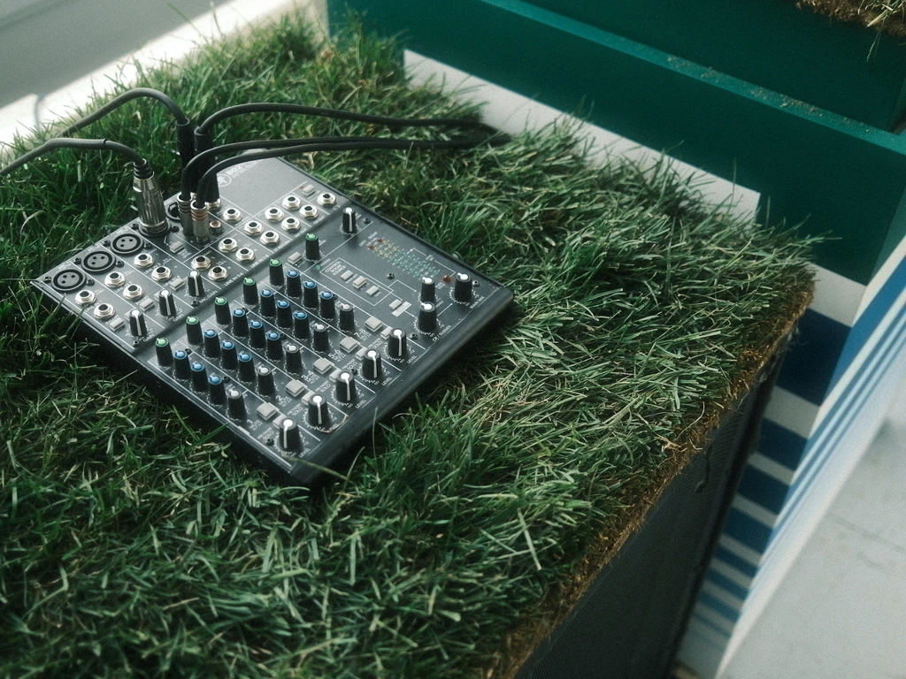
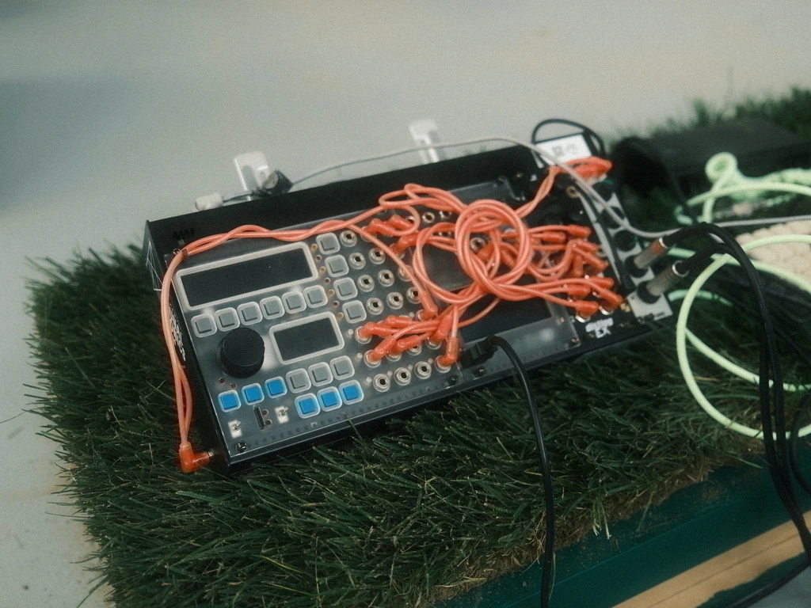
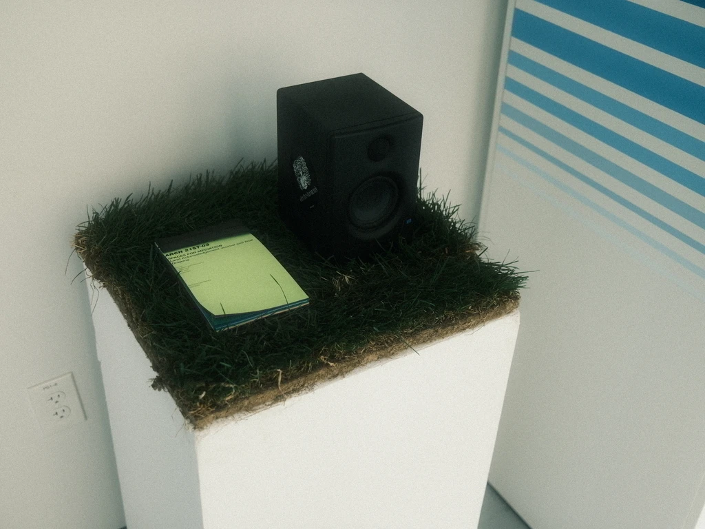

Granular synthesis reminds me of grains of sand. The wind blows grains of sand in the wind to create a new portrait in the ground. recorded audio is a trim and cut/sample of that moment in time representing sound visually, sand and dust in relation to minimalism and minimalistic moves within composition. Granular synthesis reminds me of evolution. You start with a set of genes, that is your audio, your initial state, first generation, and as you stretch that state, that initial audio over time, the longer the audio is stretched, the audio adapts to itself and has to inevitably evolve into a new form of being. Granular synthesis reminds me of raindrops in a storm
Spaces for Mediation
Land Acknowledgement Journal and Final Drawing

Watch the performance
This course was mostly research based. In the course we were asked to choose a land that we wanted to acknowledge and research through the course of the semester. I chose Bushwick NY. I care about this land because of the music and culture located in that area today. During my research I found that the Lenape Indigenous tribe lived on that land first. Sound became a huge part of my research because it was an ally and familiar medium for me to research the Lenape people and the current day techno and music scene. I then began drawing connections in sound between the Lenape people and the current inhabitants of Bushwick. The rhythm and minimalism in sole heart beat rate drum and vocal use I the indigenous songs of the Lenape people directly related to techno. The ritual practice of performance and dance to simple repeating rhythmic beats and vocal drones directly relates to the ritual practices of attending raves and listening to techno. Both are celebrations, the Lenape people are celebrating the land and the environment, and I am celebrating music, meditation and ritual practice in itself in parallel to the Lenape people. My research on various forms of sonic practice to present my research brought me to granular synthesis because of its relation to nature, generation and generativeness, an initial state of being, and evolution over time.
I presented my work as an installation and sonic performance where I placed real grass in between all electronic musical instruments (my modular synthesizer and speakers) and the ground, creating a filter between the electronic and the organic, a filter between the new, grass as regrowth and generativeness, and the land itself. I processed and manipulated existing authentic Lenape music using Teletype (a live coding eurorack with its own syntax, voltage followed from the amplitude of the incoming Lenape songs informed and was translated into binary, whose values were converted to digital pulses and slewed voltages to trigger and manipulate the granular algorithms controls). This performance was not only a presentation of my land acknowledgment and research but a ritual practice in itself and a representation of the history of music culture through creative computation.
  


incoming gear